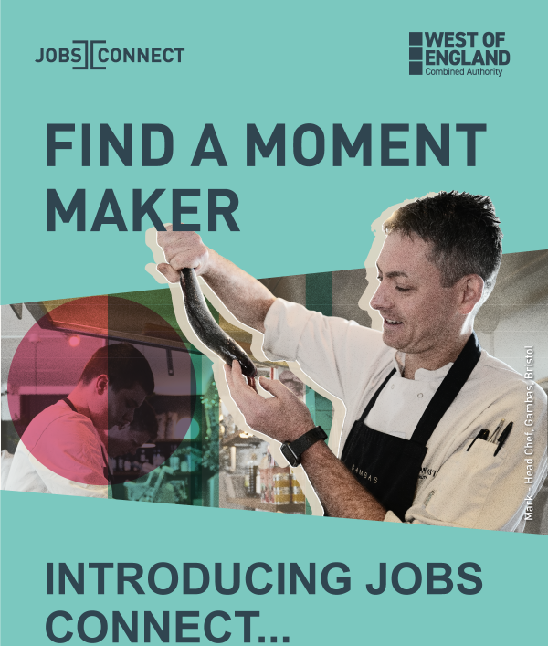

|  |
|
Find your next great hire with Jobs Connect: your new, free-to-use hospitality recruitment platform. Jobs Connect is used by some of the region's biggest hospitality and tourism businesses, including Season & Taste, Root, Thekla, The Wave, De Dere Tortworth Course and Pony Bistro North Street. Jobs Connect is here to help you find the best possible candidates to take yourhospitality business to the next level. Register for free today and connect with top hospitality and tourism talent across the West of England at JobsConnectWest.co.uk |

|

|